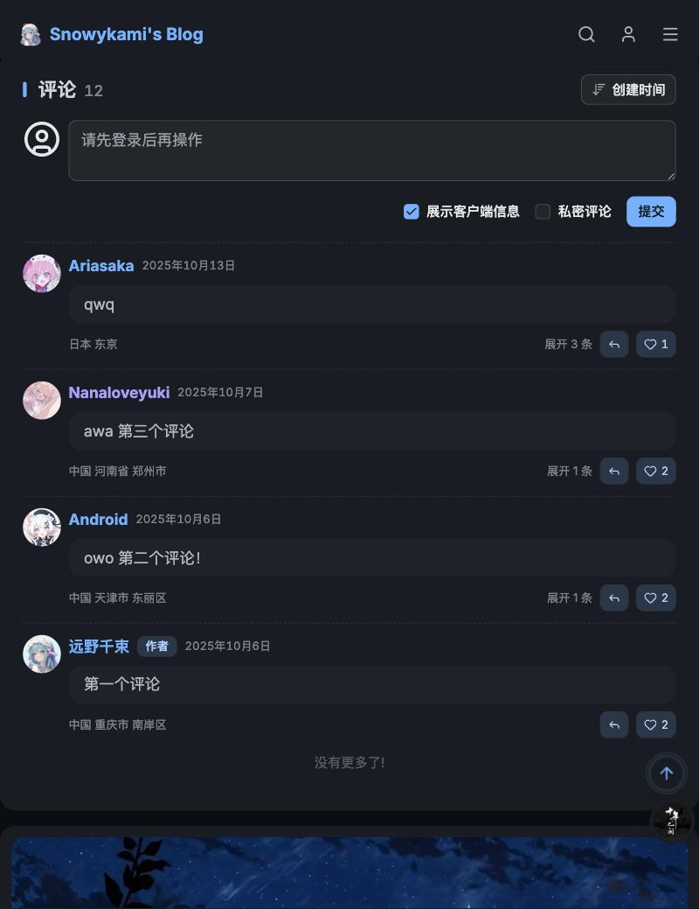
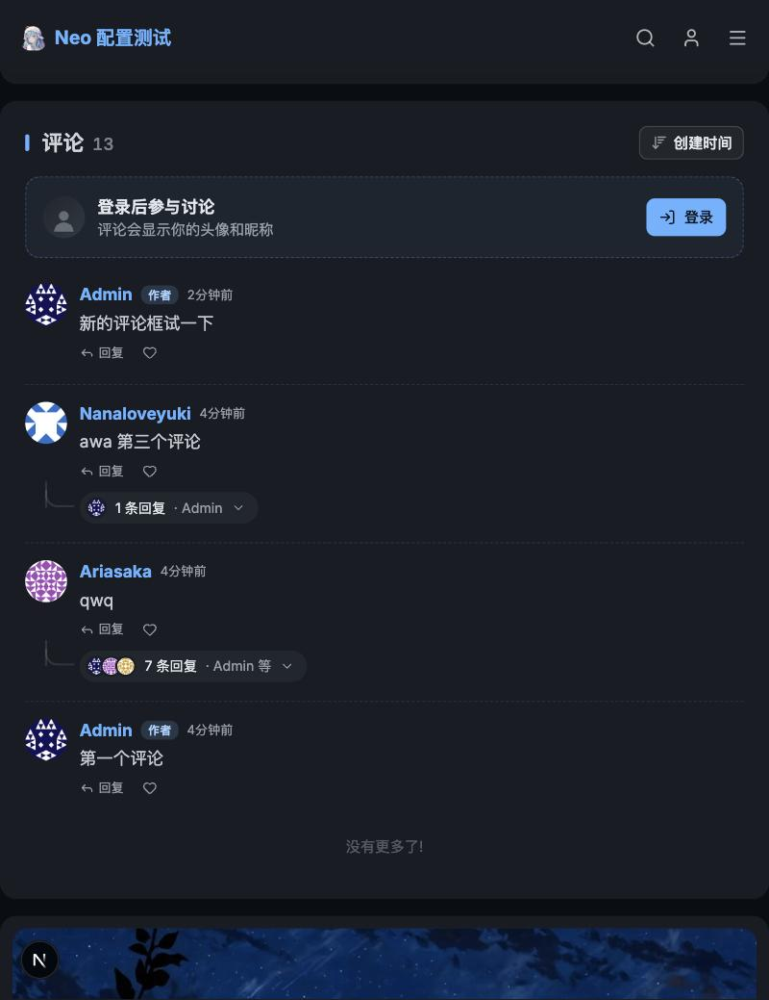
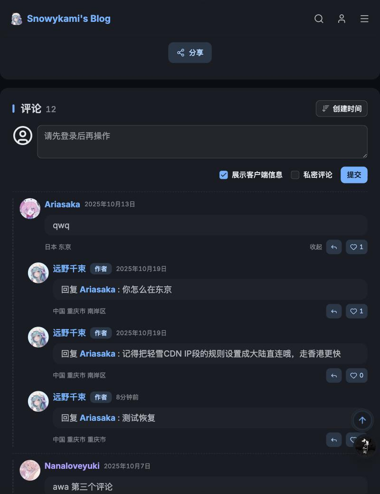
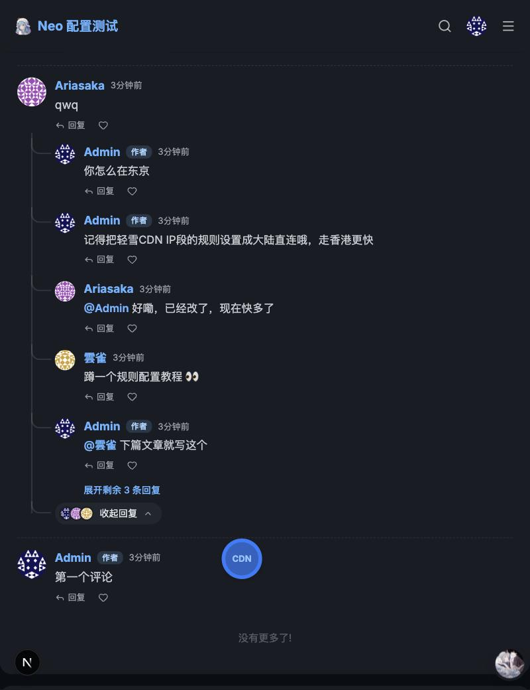
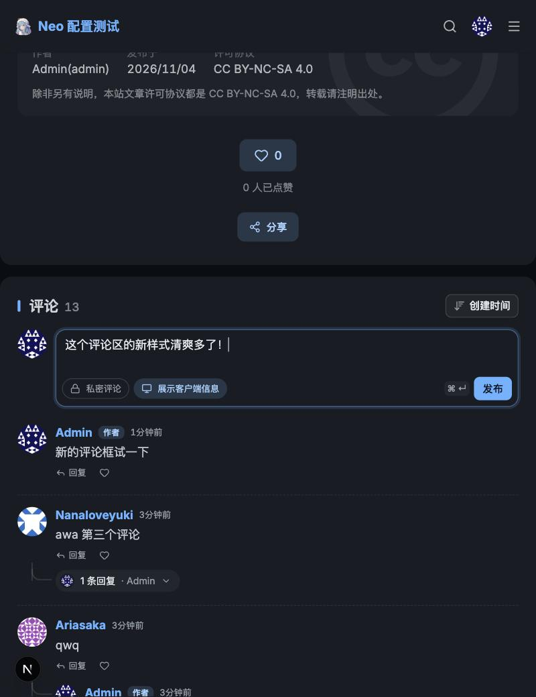
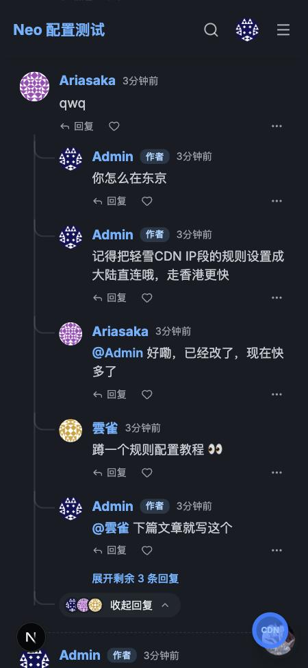

⓪ 修改前后对比 线上博客（修改前）与本地实现（修改后）的截图，深色模式
方案 A 已落地：未登录显示邀请卡片，登录后是可收起的评论框，回复按线程平铺在主评论下一层。下面是同一组场景改版前后的实际截图；再往下是最初的交互原型，可以点着试。
未登录时的评论区与评论列表
修改前

修改后

展开回复
修改前

修改后

登录后的评论框 · 手机
修改后

修改后

① 未登录时的评论区 替换掉线条粗重的 CircleUser 大图标
现在游客看到的是一个 40px 的线条图标 + 一个能输入但提交时才报错的输入框，还有两个对游客没有意义的选项。优化后不让游客白写一段再被告知要登录。
现状
请先登录后再操作
方案 A · 邀请卡片已采用
登录后参与讨论
评论会显示你的头像和昵称，也能收到回复通知
第三方登录按钮读后台已启用的 OIDC 配置；隐藏「私密」「设备信息」选项和提交按钮。
方案 B · 占位输入框未采用
写下你的想法…登录后评论
保留「评论框」的样子，但不可输入；点一下就在下方弹出登录提示（点上面的框试试）。
② 登录后的评论框 平时收起成一行，聚焦后展开工具栏
「私密」「显示设备信息」从输入框外的两个复选框，收进输入框底部的开关小标签；发布按钮在内容为空时禁用，支持 ⌘/Ctrl + Enter 发布。
收起（未聚焦）
远
展开（输入中，可交互）
远
③ 评论列表与回复 扁平两层 + 线程连线
现在展开回复时父评论整体右移、加虚线边框，回复和主评论一样大，每条都带「回复 xxx：」。优化后回复统一挂在主评论下面一层（回复的回复也不再继续缩进），用小头像和连线表达层级；只有回复的是另一条回复时才显示 @某人。
优化后（可交互：展开 / 回复 / 点赞）
现状（展开后）
A
Ariasaka
qwq
远
远野千束 作者
回复 Ariasaka：你怎么在东京
远
远野千束 作者
回复 Ariasaka：记得把轻雪CDN IP段的规则设置成大陆直连哦，走香港更快
④ 手机上的效果 375px，回复只多缩进一层
手机上隐藏评论框左侧头像、设备信息只在桌面显示；不论回复多少层，最多缩进 44px，不会越缩越窄。
登录后参与讨论评论会显示你的头像和昵称
⑤ 已落地的改动
- 游客头像：新增
GuestAvatar（柔和底色 + 实心剪影），替代线条CircleUser。 - 未登录评论框：
CommentInput在未登录时渲染邀请卡片，登录按钮复用useToLogin，第三方登录按钮读/user/oidc/list（登录后回到当前页）；回复、点赞按钮对游客给出登录提示。 - 登录后评论框：主评论框收起成一行、聚焦展开；两个复选框改为框内开关；内容为空或编辑后没有改动时禁用发布；⌘/Ctrl + Enter 发布；回复框内显示「回复 @某人」并可取消。
- 回复线程（后端）：评论列表接口支持
root_id一次取回主评论下整个线程（不限层级）；主评论列表附带thread_count与thread_users（可见回复数与最早回复的 3 位用户），可见性规则与列表一致，私密回复不会泄露。 - 回复线程（前端）：回复按时间平铺在主评论下一层，回复的是另一条回复时才显示 @某人；默认收起，展开后先显示 5 条；回复、删除后重新加载线程并更新评论总数。
- 操作与信息：回复 / 点赞改为文字按钮，「更多」在桌面端悬停时显示；时间、地点、设备合并进名字那一行，设备只在桌面端显示。
- 顺手修复：评论容器不再用
article，避免正文排版样式（article img）把评论头像压扁。